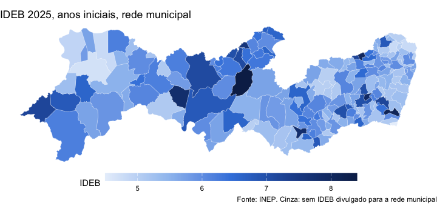
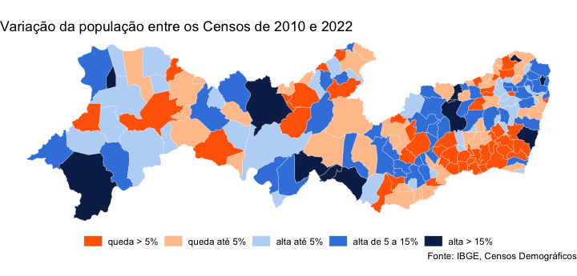
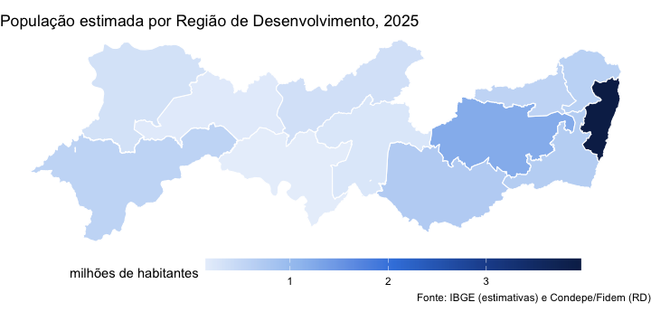
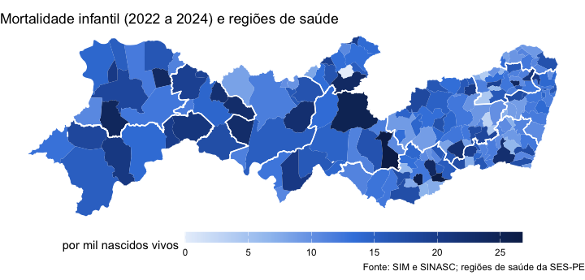
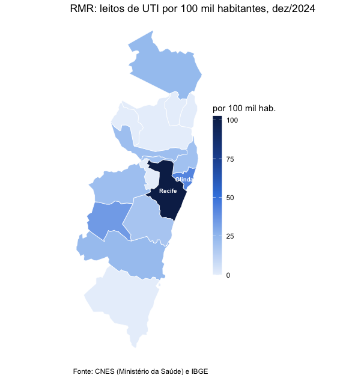

Toda observação do Observatório traz o código IBGE do município
(cd_municipio_ibge), e isso basta para juntar os dados a
uma malha municipal e fazer mapas. O pacote traz a malha
(condepe_geometry()), a junção
(condepe_add_geometry()) e as regionalizações do estado
(condepe_regions()). Esta vignette usa sf e
ggplot2, que não são dependências obrigatórias do
pacote:
install.packages(c("sf", "ggplot2"))A malha municipal
condepe_geometry() baixa a Malha Municipal de Pernambuco
publicada pela Condepe/Fidem (a edição corrente, conferida pelo SHA-256
e guardada em cache). Com source = "ibge", a malha vem da
API de malhas do IBGE.
Fernando de Noronha (2605459) fica a 545 km da costa; num mapa do
estado inteiro ele espreme o continente para a esquerda. Os mapas abaixo
o deixam de fora com noronha = FALSE:
malha <- condepe_geometry(noronha = FALSE)
attr(malha, "version")
#> [1] "2025-v3"
malha
#> Simple feature collection with 184 features and 2 fields
#> Geometry type: MULTIPOLYGON
#> Dimension: XY
#> Bounding box: xmin: -41.35834 ymin: -9.482897 xmax: -34.80669 ymax: -7.272954
#> Geodetic CRS: WGS 84
#> First 10 features:
#> cd_municipio_ibge nm_municipio geometry
#> 1 2600054 Abreu e Lima MULTIPOLYGON (((-34.9148 -7...
#> 2 2600104 Afogados da Ingazeira MULTIPOLYGON (((-37.52795 -...
#> 3 2600203 Afrânio MULTIPOLYGON (((-40.76417 -...
#> 4 2600302 Agrestina MULTIPOLYGON (((-35.98255 -...
#> 5 2600401 Água Preta MULTIPOLYGON (((-35.5714 -8...
#> 6 2600500 Águas Belas MULTIPOLYGON (((-37.15559 -...
#> 7 2600609 Alagoinha MULTIPOLYGON (((-36.75877 -...
#> 8 2600708 Aliança MULTIPOLYGON (((-35.16596 -...
#> 9 2600807 Altinho MULTIPOLYGON (((-36.13812 -...
#> 10 2600906 Amaraji MULTIPOLYGON (((-35.39472 -...Um tema limpo para os mapas, nas cores do Observatório:
tema_mapa <- theme_void(base_size = 11) +
theme(plot.title.position = "plot", legend.position = "bottom",
legend.key.width = unit(2.2, "cm"), legend.key.height = unit(0.35, "cm"))
azuis <- c("#e8f0fb", "#9fc3f0", "#3d84df", "#1f4f9a", "#0c2856")Mortalidade infantil
A taxa de mortalidade infantil é ruidosa nos municípios pequenos (poucos nascimentos por ano); a média de três anos é mais estável:
tmi <- condepe_series(
"datasus_mortalidade_infantil",
"Taxa de mortalidade infantil (por mil nascidos vivos)",
years = 2022:2024
)
media <- aggregate(valor ~ cd_municipio_ibge, data = tmi, FUN = mean)
mapa <- condepe_add_geometry(media, geometry = malha)
summary(mapa$valor)
#> Min. 1st Qu. Median Mean 3rd Qu. Max.
#> 0.00 10.70 13.26 13.78 16.59 26.73
ggplot(mapa) +
geom_sf(aes(fill = valor), colour = "white", linewidth = 0.08) +
scale_fill_gradientn(colours = azuis, name = "por mil nascidos vivos", na.value = "grey85") +
labs(title = "Mortalidade infantil, média de 2022 a 2024",
caption = "Fonte: SIM e SINASC (Ministério da Saúde), via Observatório de Pernambuco") +
tema_mapaplot of chunk tmi
IDEB das escolas municipais
ideb <- condepe_series(
"inep_ideb_anos_iniciais", "IDEB observado - Municipal", years = 2025
)
mapa <- condepe_add_geometry(ideb, geometry = malha)
ggplot(mapa) +
geom_sf(aes(fill = valor), colour = "white", linewidth = 0.08) +
scale_fill_gradientn(colours = azuis, name = "IDEB", na.value = "grey85") +
labs(title = "IDEB 2025, anos iniciais, rede municipal",
caption = "Fonte: INEP. Cinza: sem IDEB divulgado para a rede municipal") +
tema_mapa
plot of chunk ideb
Variação: classes e divergência
Para uma variação, que tem sinal, a escala divergente deixa claro quem cresceu e quem encolheu. Variação da população entre os Censos de 2010 e 2022 (as estimativas anuais não cobrem anos de Censo, e comparar estimativas de antes e de depois do Censo de 2022 misturaria bases diferentes):
pop <- condepe_series(
"sidra_censo_cor_raca", "IBGE - População residente - Total",
years = c(2010, 2022)
)
w <- reshape(as.data.frame(pop[, c("cd_municipio_ibge", "ano", "valor")]),
idvar = "cd_municipio_ibge", timevar = "ano", direction = "wide")
w$var <- 100 * (w$valor.2022 / w$valor.2010 - 1)
w$classe <- cut(w$var, c(-Inf, -5, 0, 5, 15, Inf),
labels = c("queda > 5%", "queda até 5%", "alta até 5%", "alta de 5 a 15%", "alta > 15%"))
mapa <- condepe_add_geometry(w, geometry = malha)
table(mapa$classe)
#>
#> queda > 5% queda até 5% alta até 5% alta de 5 a 15% alta > 15%
#> 48 43 34 47 12
ggplot(mapa) +
geom_sf(aes(fill = classe), colour = "white", linewidth = 0.08) +
scale_fill_manual(values = c("#ff6700", "#ffc49a", "#bcd6f5", "#3d84df", "#0c2856"),
name = NULL, drop = FALSE) +
labs(title = "Variação da população entre os Censos de 2010 e 2022",
caption = "Fonte: IBGE, Censos Demográficos") +
tema_mapa + theme(legend.key.width = unit(0.6, "cm"))
plot of chunk populacao
Regiões
condepe_regions() diz a que região pertence cada
município em dez regionalizações: Regiões de Desenvolvimento (RD) da
Condepe/Fidem, meso e microrregiões e regiões imediatas e intermediárias
do IBGE, regiões e macrorregiões de saúde, Gerências Regionais de
Educação (GRE), regiões fiscais da SEFAZ e regiões metropolitanas. A
tabela vai com o pacote, sem rede:
reg <- condepe_regions()
reg
#> # A tibble: 185 × 12
#> cd_municipio_ibge nm_municipio rd mesorregiao microrregiao
#> <chr> <chr> <chr> <chr> <chr>
#> 1 2600054 Abreu e Lima Região Metro… Metropolit… Recife
#> 2 2600104 Afogados da Ingazeira Sertão do Pa… Sertão Per… Pajeú
#> 3 2600203 Afrânio Sertão do Sã… São Franci… Petrolina
#> 4 2600302 Agrestina Agreste Cent… Agreste Pe… Brejo Perna…
#> 5 2600401 Água Preta Mata Sul Mata Perna… Mata Meridi…
#> 6 2600500 Águas Belas Agreste Meri… Agreste Pe… Vale do Ipa…
#> regiao_intermediaria regiao_imediata regiao_saude macrorregiao_saude gre
#> <chr> <chr> <chr> <chr> <chr>
#> 1 Recife Recife I Região de… Metropolitana Metr…
#> 2 Serra Talhada Afogados da Ingaze… X Região de… Sertão Sert…
#> 3 Petrolina Petrolina VIII Região… Vale do São Franc… Sert…
#> 4 Caruaru Caruaru IV Região d… Agreste Agre…
#> 5 Recife Palmares III Região … Metropolitana Mata…
#> 6 Caruaru Garanhuns V Região de… Agreste Agre…
#> # ℹ 179 more rows
#> # ℹ 2 more variables: regiao_fiscal <chr>, rm <chr>
table(reg$rd)
#>
#> Agreste Central Agreste Meridional
#> 27 26
#> Agreste Setentrional Distrito Estadual
#> 19 1
#> Mata Norte Mata Sul
#> 19 23
#> Região Metropolitana do Recife Sertão Central
#> 14 8
#> Sertão de Itaparica Sertão do Araripe
#> 7 10
#> Sertão do Moxotó Sertão do Pajeú
#> 7 17
#> Sertão do São Francisco
#> 7Para mapear uma região, agregue os dados por região numa coluna
regiao e passe level a
condepe_add_geometry(): a malha municipal é dissolvida na
regionalização pedida, com as mesmas divisas. População estimada de 2025
por Região de Desenvolvimento:
pop <- condepe_series("sidra_populacao_estimada", "Populacao residente estimada",
years = 2025)
pop <- merge(pop, condepe_regions("rd")[, c("cd_municipio_ibge", "regiao")])
por_rd <- aggregate(valor ~ regiao, data = pop, FUN = sum)
por_rd[order(-por_rd$valor), ]
#> regiao valor
#> 7 Região Metropolitana do Recife 3961730
#> 1 Agreste Central 1214544
#> 2 Agreste Meridional 702044
#> 6 Mata Sul 671469
#> 5 Mata Norte 610969
#> 13 Sertão do São Francisco 569327
#> 3 Agreste Setentrional 567121
#> 12 Sertão do Pajeú 345392
#> 10 Sertão do Araripe 336359
#> 11 Sertão do Moxotó 251957
#> 8 Sertão Central 184722
#> 9 Sertão de Itaparica 143032
#> 4 Distrito Estadual 3341
mapa <- condepe_add_geometry(por_rd, level = "rd", noronha = FALSE)
ggplot(mapa) +
geom_sf(aes(fill = valor / 1e6), colour = "white", linewidth = 0.4) +
scale_fill_gradientn(colours = azuis, name = "milhões de habitantes") +
labs(title = "População estimada por Região de Desenvolvimento, 2025",
caption = "Fonte: IBGE (estimativas) e Condepe/Fidem (RD)") +
tema_mapa
plot of chunk rd
Os contornos das regiões também servem de camada sobre um mapa municipal. Os municípios coloridos pela taxa de mortalidade infantil e, por cima, as doze regiões de saúde (as Geres):
geres <- condepe_geometry("regiao_saude", noronha = FALSE)
ggplot() +
geom_sf(data = condepe_add_geometry(media, geometry = malha),
aes(fill = valor), colour = NA) +
geom_sf(data = geres, fill = NA, colour = "white", linewidth = 0.5) +
scale_fill_gradientn(colours = azuis, name = "por mil nascidos vivos", na.value = "grey85") +
labs(title = "Mortalidade infantil (2022 a 2024) e regiões de saúde",
caption = "Fonte: SIM e SINASC; regiões de saúde da SES-PE") +
tema_mapa
plot of chunk saude
Região Metropolitana do Recife
Para ver um recorte, filtre a malha antes de desenhar. Os 15 municípios da Região Metropolitana do Recife (Goiana entrou em 2018) e os leitos de UTI por 100 mil habitantes em dezembro de 2024:
reg_rm <- condepe_regions("rm")
rmr <- reg_rm$cd_municipio_ibge[reg_rm$regiao %in% "Região Metropolitana do Recife"]
uti <- condepe_series("datasus_leitos", "Leitos de UTI - Total", code = rmr, years = 2024)
pop <- condepe_series("sidra_populacao_estimada", "Populacao residente estimada",
code = rmr, years = 2024)
d <- merge(pop[, c("cd_municipio_ibge", "nm_municipio", "valor")],
uti[, c("cd_municipio_ibge", "valor")],
by = "cd_municipio_ibge", suffixes = c("_pop", "_uti"), all.x = TRUE)
d$valor_uti[is.na(d$valor_uti)] <- 0 # município sem leito no CNES-LT: zero leitos de UTI
d$por_100mil <- 1e5 * d$valor_uti / d$valor_pop
d[order(-d$por_100mil), c("nm_municipio", "valor_uti", "por_100mil")]
#> nm_municipio valor_uti por_100mil
#> 14 Recife 1627 102.47483
#> 12 Olinda 155 42.41903
#> 11 Moreno 20 34.69391
#> 5 Goiana 20 23.48520
#> 3 Cabo de Santo Agostinho 50 23.04477
#> 15 São Lourenço da Mata 25 21.22980
#> 1 Abreu e Lima 22 21.16504
#> 13 Paulista 72 19.83690
#> 10 Jaboatão dos Guararapes 124 18.14763
#> 2 Araçoiaba 0 0.00000
#> 4 Camaragibe 0 0.00000
#> 6 Igarassu 0 0.00000
#> 7 Ipojuca 0 0.00000
#> 8 Ilha de Itamaracá 0 0.00000
#> 9 Itapissuma 0 0.00000
mapa <- condepe_add_geometry(d, geometry = malha, all = FALSE)
mapa$rotulo <- ifelse(mapa$por_100mil >= 40, mapa$nm_municipio, "") # os demais, na tabela acima
ggplot(mapa) +
geom_sf(aes(fill = por_100mil), colour = "white", linewidth = 0.3) +
geom_sf_text(aes(label = rotulo), size = 2.6, colour = "white", fontface = "bold",
fun.geometry = function(x) suppressWarnings(sf::st_point_on_surface(x))) +
scale_fill_gradientn(colours = azuis, name = "por 100 mil hab.") +
labs(title = "RMR: leitos de UTI por 100 mil habitantes, dez/2024",
caption = "Fonte: CNES (Ministério da Saúde) e IBGE") +
tema_mapa +
theme(legend.position = "right", legend.key.width = unit(0.4, "cm"),
legend.key.height = unit(1.4, "cm"))
plot of chunk rmr
Os leitos concentram-se no Recife, que atende pacientes de toda a região: o indicador mede oferta no município, não acesso de quem mora nele.